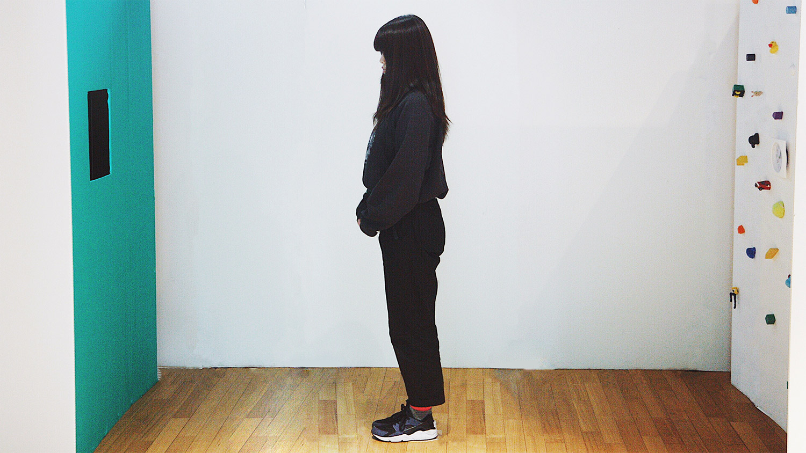

Mirror of magritte
-2018 installation/programing

Mirror of Magritteは自分の後ろ姿が見える鏡がある状況を体験できる装置です。 マグリットの作品の中にある「複製禁止」という作品から構想を経て、 その空間で自分だけが反転せず、鏡に自分の後ろ姿がうつっているように見えます。 プログラミングソフトProcessingと、webカメラを用いて、リアルタイムクロマキー技術で、背後の壁から被験者の後ろ姿を撮影しているwebカメラの映像の緑色の部分に、背後の壁の画像を合成しています。 日常的な鏡と自分というものを非日常に変えるインスタレーションです。。
